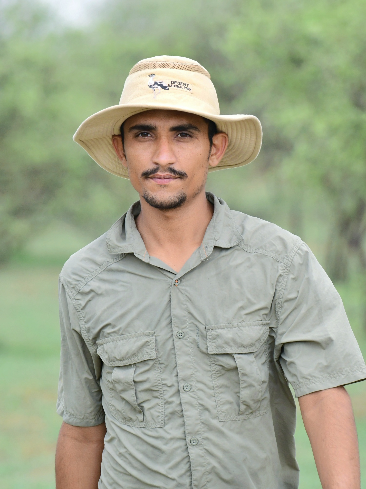
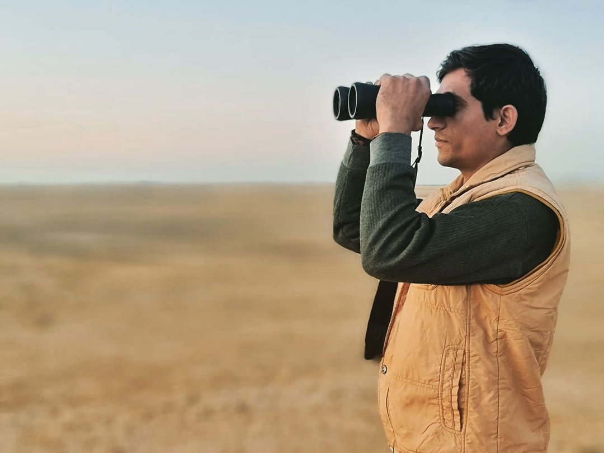
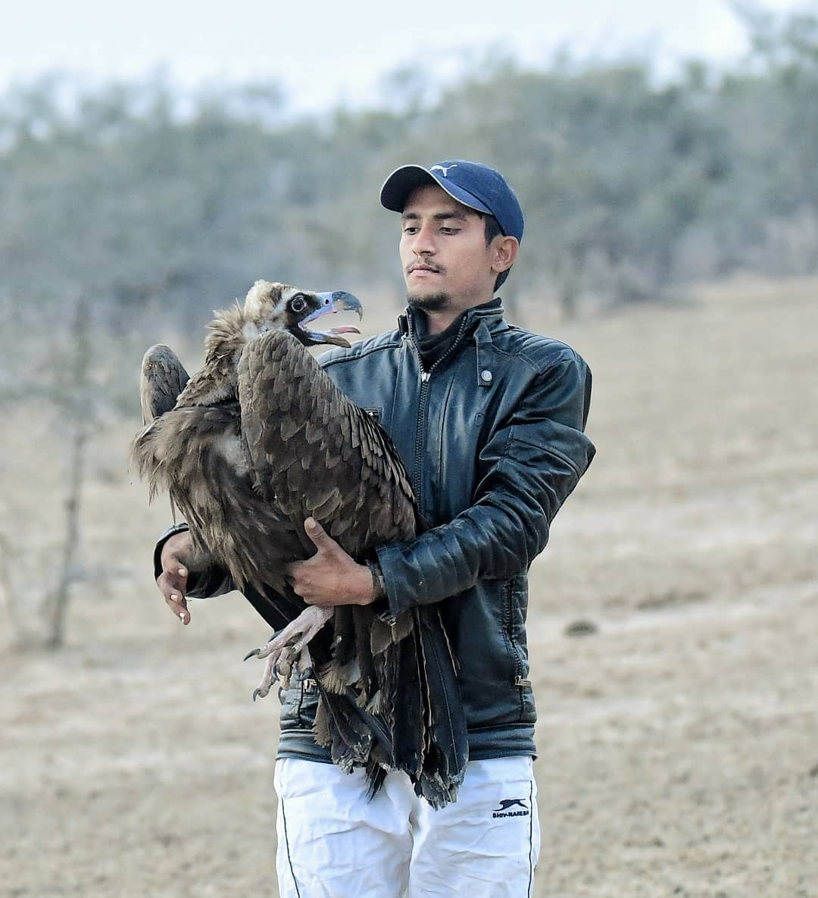

Guiding You to Nature's Secrets and Avian Delights of the National Desert Park , Thar Desert
Radheshyam Pemani Bishnoi a name synonymous with unwavering dedication to nature's wonders, found his purpose amid the golden expanse of Jaisalmer's desert. From his early days, Radhe's life was a harmonious symphony with the wilderness, a melody shaped by his deep connection to the arid landscapes.
Born and raised in the heart of the Thar, Radhe's love for wildlife and the Great Indian Bustard grew as naturally as the desert's winds. In his formative years, he instinctively rescued injured creatures, nurturing a bond that would evolve into a lifelong commitment to their welfare.
As the desert's challenges mirrored life's complexities, Radhe's determination only intensified. The plight of the Great Indian Bustard, once a thriving icon, touched his heart deeply. Witnessing their struggle against habitat loss and human-made obstacles, he felt a calling to stand as their protector and advocate.
Armed with a profound knowledge of the Desert National Park , Radhe embarked on a new chapter as a guide. His goal extended beyond showcasing the park's beauty; he aimed to unveil its hidden stories, inviting travelers to join him in a journey of discovery. His tranquil demeanor and boundless passion create an atmosphere of connection, allowing visitors to experience the desert's soul.
Radhe's exceptional dedication has earned him numerous accolades, including recognition and awards from renowned platforms like
Sanctuary Asia . His impactful efforts have also led him to become a proud Mud-on-Boots Project Leader, a testament to his hands-on involvement in conservation.
His unwavering commitment has captured the attention of social media accounts belonging to state and national tourism pages. Moreover, Radhe's relentless pursuit of preserving the Great Indian Bustard and chinkara populations has garnered him prestigious awards, validating his struggle and passion.
Today, Radhe's presence radiates a unique blend of resilience and hope. His journey transformed from that of a village boy tending to wounded animals into a beacon of inspiration for wildlife conservation. His advocacy extends beyond guiding tourists—it's a testament to his profound belief in the harmony between humans and the wild.
Radhe's story weaves struggles into triumphs, and his impact ripples beyond the desert's horizon. His tale is one of love, dedication, and the eternal dance between humans and nature. As he walks the desert sands, he leaves footprints not just on the dunes, but also on the hearts of those who join him on his journey.



Call To Action
Ready For Unforgatable Travel. Remember Us!
"Prepared to Immerse in Unforgettable Thar Desert Exploration ? Let Your Journey Echo Our Warmth and Expertise Forever."